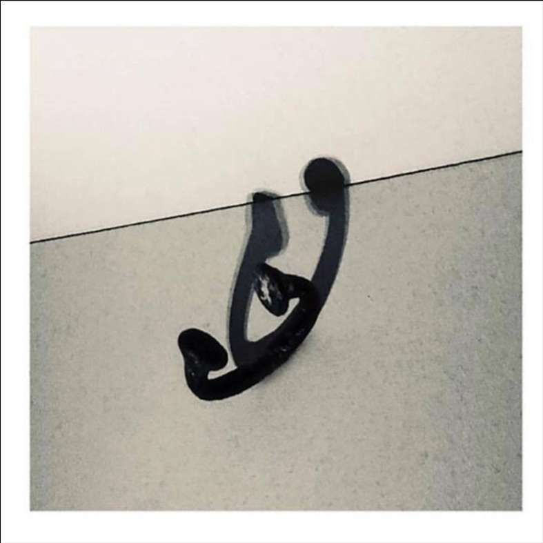

Drogas Wave
top 100 singles
- The Show Goes On
- Superstar
- Out Of My Head
- Lamborghini Angels
- Battle Scars
- Kick Push

Wasalu Muhammad Jaco, better known by his stage name Lupe Fiasco, is a Chicago-born, Grammy award-winning American rapper, record producer, entrepreneur, and community advocate. Rising to fame in 2006, following the success of his debut album, Food & Liquor, Lupe has released more than four acclaimed studio albums; his latest being Drogas Wave released fall 2018. His efforts to propagate conscious material helped solidify him as GQ’s Man of the Year in 2006, and garnered recognition as a Henry Crown Fellow. While musical genius and ingenuity are at the forefront of Lupe’s achievements, the artist extends his innovation to projects that aim to foster creative discourse and opportunities in underprivileged and impoverished communities.
Their continued efforts to elevate community engagement can be seen through the myriad of movements they have co-founded and supported. As the co-founder and co-owner of community initiatives such as, We Are M.U.R.A.L, The Neighborhood Start-Up Fund, Society of Spoken Art, and Studio SV, Lupe Fiasco proves that he is more than just a mouthpiece for change, but a committed facilitator of intellectual community discourse and outreach.
His conscious efforts to propagate social and artistic change has Lupe Fiasco’s desire to promote generational wealth and awareness continues to inspire his musical and community efforts; serving as a distinguished example in giving back and paying it forward!